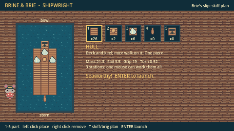
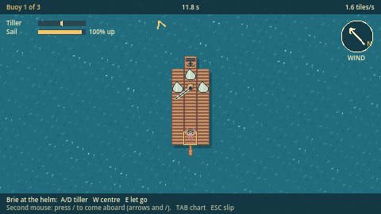
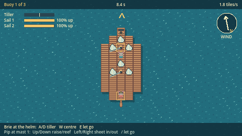
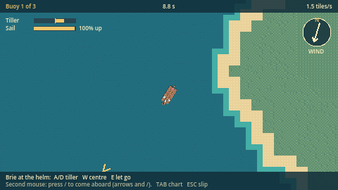

Game · first full game on the suite
Brine & Brie: Shipwright
Build a ship on a grid. Then crew it: Brie walks the deck and can only work the station she stands at. Set the tiller, run forward to trim the sail, run back before the wind shifts.
in development · desktop · not released

A ship is a place, not a cursor
Helm
Stand on the tiller to put it over. It stays where you leave it, so a lone mouse can go and trim.
Sail line
One per mast, worked from beside it: raise, reef, sheet in or ease out. The boom swings to leeward on its own.
Anchor windlass
Drop it at once; hauling it back takes two and a half seconds of holding.
A second player brings Pip aboard on the same keyboard. On the test course a lone mouse sails the two-masted brig round in 186.8 s; with two mice it takes 72.6 s.


Built on the suite
| Section | What it does here |
|---|---|
"world" | Terrain coastal_outpost, seed 11, with the most water Terrain allows; the course is three buoys on it. |
"engine" | Godot 4.7.2 .NET. The game rules are plain C# with no engine types, so the game and the test run the same numbers. |
"test" | Under Forge with the network off: ship rules, station rules, a bot crew that walks between stations and rounds the course, sailing physics, and the same track hash for the same seed. 25 / 25 checks. |
The pixel art is drawn for the game as pixel maps in source, in the palette of the Brine & Brie world.
Not built yet
Most of a game. No release or download, no sound, no saving, no cannons, cargo or trading, and no online crew. Next: a shared sea that SHADW Terrain generates chunk by chunk as crews explore it together. Godot cannot yet export C# games to the web, so Shipwright is a desktop game.